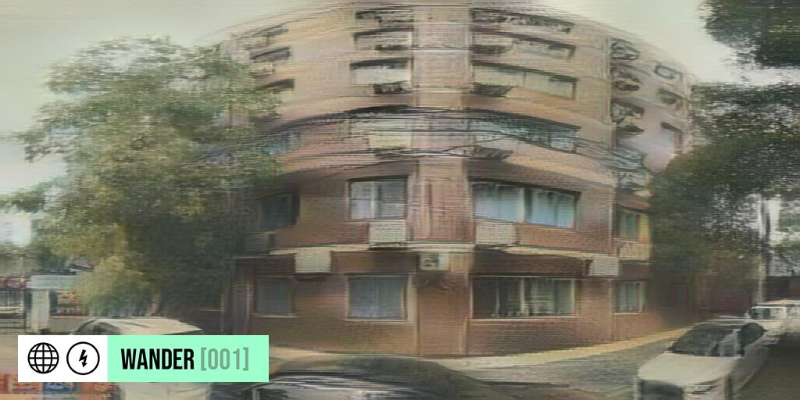

这里是3050年的东方明珠。我的飞行器缓缓降落。 我穿着笔挺西服走进了酒店内。这时候一群记者围堵了上来。 "请问您就是那位在网络上火爆全球的作家吗？" "请问你对自己创造这个世界有什么看法。" "听闻您已经获得了诺贝尔奖，请问您还会继续参加奥运会吗？" "请问你对奥运会还有什么计划？" ...... 面对记者的询问。我微笑道："我并不是什么奥运冠军，也没有获得什么奖项，而且这个世界是虚拟世界。" "虚拟世界吗？请问这是怎么回事呢？"
最新行动记录如下
时间交汇点：2021年7月9日 21:49
[行动详情仅0254号协助人可见]
